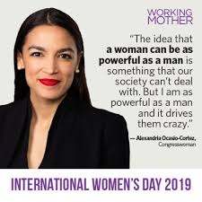

TREATMENT AND ROLE OF WOMEN IN THE NOVEL HOMEGOING.
In the novel home going , there is a cycle of violence whereby Effia dropped her brother Fiifi when he was young and Baaba beat her viciously. When Cobbe found out about it he beat Baaba ,which was a sort of mistreat to women.

Giving birth and taking care of children was a major role for women in the novel home going , when Effia was born , Baaba who was the first wife of Cobbe was left incharge of Effia to take care of her despite her not being the real mother of Effia. After a while Baaba gave birth to her first son Fiifi whereby she had to take care of both Effia and Fiifi.
Women were also item for marriage , when Adwoa got married to a British soldier and she was taken to the castle on cape coast . Cobbe warned Efiia not to be married by a white but instead be married to a village man. This was contrary to what Baaba wanted because she wanted Effia to be married by a white man for they paid high bride price.

When Afua killed herself by holding her breath , soldier later came and the women had to lie down and have more women stacked on top of them since there was a little room in the dungeon. Some women were beaten unconsciously before being stacked and everyone had to urinate and deficate directly on those beneath them. This was a form of mistreatment.
THE ROLE AND TREATMENT OF WOMEN IN TODAY’S SOCIETY IN RELATION TO HOMEGOING.
In this modern society , we can see that women have a voice and they can make their own decisions in terms of marriage . women nowadays have the right to choose a marriage partner and settle happily and decide to have children or not. This is contrary to Effias’s story whereby a marriage partner was chosen for you and you had to follow the parents choice. 
In our modern society , women are leaders in different categories . nowadays women voice is heard in different ways as she can have a right to vie for a post and get voted for. Unlike in Effia story were only men were allowed to be leaders(chiefs) and leadership was hereditary. This form of tradition was oppressive to women as they had no voice in the society unlike today we have channels which fight for female rights for example (CARE Kenya)
In today’s society , we have women who are educated and doing great things for the country. Women nowadays have the right to access schools and learn what they are interested in without fear of been judged as a woman and also running big companies even in presence of the male gender unlike in the novel the homegoing we don’t see anywhere women were taken in school and access of academics. This made them to lag behind and they had no power to improve themselves without depending on men.

In today’s society women have a voice and responsibility. Women nowadays have to do things without consulting anyone, this gives them a freedom to rule their lives and be comfortable with who the are. This is contrary to Effia, Esi , Maame , Baaba were they had to consult a man before making any decision in life.